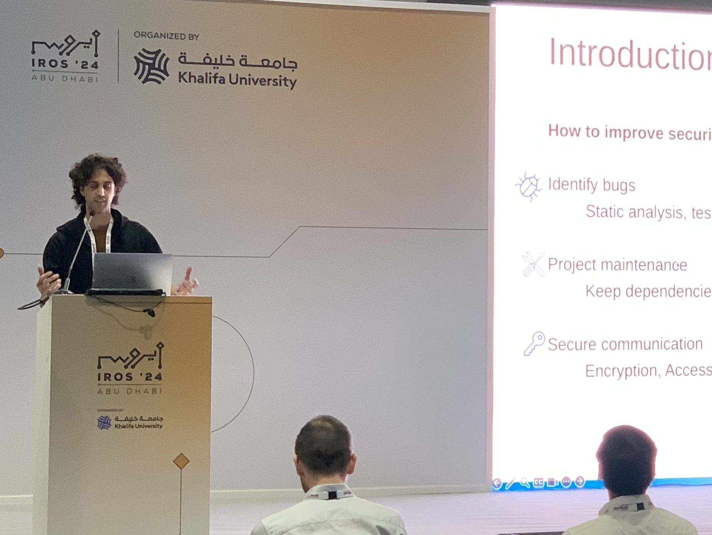
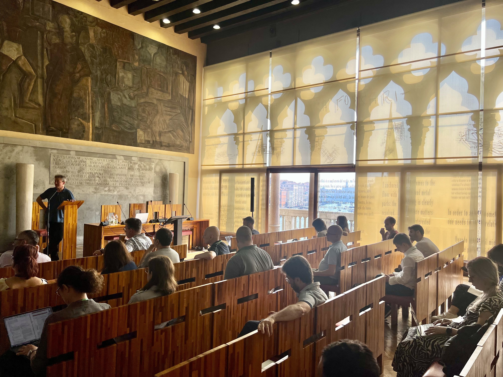

I am a PhD student in Computer Science, specializing in static analysis and program verification with a focus on robotic software and microservices. I am also exploring the explainability of neural networks using abstract interpretation. Formerly, I was a Technical Leader, managing software projects and leading a team of developers.

Giacomo Zanatta
PhD student in Computer Science.#staticanalysis, #robotics, #microservices, #formalverification
Ca' Foscari University of Venice, Italy
Github: giacomozanatta
LinkedIn: giacomozanatta
WhoamI
news
(16 OCT. 2024) Paper presented at IROS24!
It was an amazing experience in Abu Dhabi! Gianluca Caiazza and I were at IROS 2024 to present our paper Automating ROS 2 Security Policies Extraction through Static Analysis. 
(20 Sept. 2024) Paper presented at FTfJP24!
Read the paper
On September 20, 2024, I had the opportunity to present our work, Sound Static Analysis for Microservices: Utopia? at the Formal Techniques for Java-like Programs (FTfJP) workshop in Vienna. It was such a cool experience where I got a lot of interesting questions and feedback.
 I had the opportunity to attend also at the co-located conferences ISSTA and ECOOP, where I saw a lot of intriguing talks relating to Programming Languages and Software Analysis.
I had the opportunity to attend also at the co-located conferences ISSTA and ECOOP, where I saw a lot of intriguing talks relating to Programming Languages and Software Analysis.
(7 Jun. 2024) Challenges of Software Verification 2024!
On June 6th and 7th, the "Challenges for Software Verification (CSV)" Symposium occurred in Venice. This event, organized by Professors Agostino Cortesi and Pietro Ferrara, featured presentations and discussions on various topics, such as static code analysis, model checking, and dynamic testing.  During the CSV, I had the opportunity to meet brilliant and interesting people, share ideas with other researchers, and receive feedback on my current research project. It was a fantastic experience! If you are interested, you can find the CSV program here.